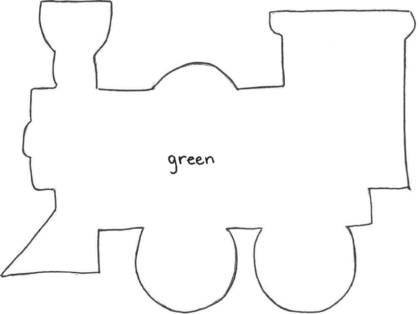

LRS 1: CLIMB THE LADDER
Purpose:
To practice beginning and ending sounds (blends).
Materials:
Tall piece of tagboard with a ladder drawn on it and laminated to make it reusable; washable felt tip pens, Vis-a-Vis, or grease pencil.
Procedures:
Before beginning, write a beginning sound in each space between the rungs of the ladder with the marker. Child must "Climb the Ladder" by saying a word beginning with each sound along the way. If they make a mistake, they fall down the ladder and must start again from the bottom using different words each time.
Variations:
Write blends or ending sounds on ladder and proceed as above.
LRS 2: SHAKE THE BEAN
Purpose:
To practice beginning sounds (blends).
Materials:
A bean (or button or marble); an egg carton with a beginning sound written in the bottom of each egg cup.
Procedure:
Place the bean in the egg carton, Close it. Shake it. Open it. The child must say a word starting with the sound in the cup when the bean has landed. If they get it right, they get a point. If they miss, you get a point. They’re bound to win!
Variations:
Write blends or vowels in the bottom of the egg cups and proceed as above.
LRS 3: BEAT THE TIMER
Purpose:
Identification of beginning and ending sounds, (blends, long or short vowels)
Materials:
Several 12 oz. orange juice cans covered with construction paper with a beginning sound written on each.
Small pictures of objects beginning with these sounds mounted on small cardboard (1-1/2" x 1-1/2")
Timer.
Procedures:
Student sorts the cards into the proper cans trying to do it before the timer stops.
Variations:
Follow the same procedure for ending sounds or blends.
LRS 4: PICTURE BANG
Purpose:
Identification of beginning and ending sounds
Materials:
Coffee can, pictures of objects cut from magazines or old workbooks pasted on cards, 4 or 5 cards with a paper pasted on that say "BANG"
Procedure:
Place all the cards in the coffee can and shake well.
The first player draws a card, identifies the picture, and says the sound with which it begins.
If a player draws a "BANG", they must put all their cards back in the can. Play continues for a predesignated length of time.
When time is up, the player with the most cards wins.
Variation:
Ending sounds - identify the sound the picture ends with.
LRS 5: SHOOT THE MOON
Purpose:
To practice beginning sounds and ending sounds (blends)
Materials:
Make a gameboard on a tagboard with a rocket in the lower corner and the moon in the opposite upper corner with a game board path in between. Cover with clear contact paper or laminate to make it reusable.
Cut pictures from old workbooks or magazines of objects that begin with (or end with) the sounds you choose to work on. Choose no more than 5 different sounds for one game. Paste the pictures onto small cards. Washable felt tip pen.
Two markers
Procedure:
Using the washable pen, write the 4 or 5 sounds you've chosen in all the spaces on the gameboard following no special pattern. Each sound will be written many times. Place the picture cards face down on the table.
First player chooses a card, tells what the picture is and the sound it starts (or ends) with. They move their marker to that letter on the gameboard starting at the rocket. Next player takes a turn. Players continue taking turns. The first player to reach the moon wins.
LRS 6: ICE CREAM COVER ROLL
Purpose:
To practice beginning sounds; (blends; vowels; vocabulary words).
Materials:
A plastic cover from a 5-quart ice cream pail.
A marble.
Circles cut from colored construction paper to fit inside the cover.
Procedure:
Divide the circles into sections and place the sounds or words you are working on in the sections along with some small numbers for scoring points.
Place the circle you are using inside the plastic cover. Place it on a level table or floor. First player rolls a marble around the inside of the cover. They must say the word it lands on or identify the sound. If correct, they score the number of points in that section. Players alternate turns. High score wins.
Beginning Sounds Blends Vocabulary Words
Note: Occasionally you may have to move the cover around to keep it from stopping in the same spots or move the paper around inside the cover.
LRS 7: FILL IN THE BLANK
Purpose:
To practice using beginning consonant sounds
Materials:
Manila folder or tagboard with the following gameboard:
One dice or spinner and two markers
Procedure:
Cards are stacked in a deck and are placed face down. The first player rolls the dice, advances the indicated number of spaces, and then chooses a "Fill in the Blank" card from the deck. The tutor reads the question, and the student answers it with a word that begins like the letter on the space they have landed on. For example:
Fill in the Blank: I turned a corner and I saw a ____________.
If the player landed on "f' they might fill in the word "fairy". If they are incorrect, they must back up to their original spot. The first player to reach the end of the path is the winner.
LRS 8: SPIDER CRAWL
Purpose:
To practice using letter sounds
Materials:
Spider crawl game, enlarged and mounted on tagboard (pattern on next page) - - web drawing with small and upper-case letters printed in spaces: dice, markers (small plastic spiders are fun).
Procedure:
Throw dice, move the correct number of spaces, say the letter in that space, tell the sound it makes and a word beginning with that letter.

LRS 9: TRAIN PATTERN
Purpose:
To reinforce beginning, middle and ending sounds
Materials:
Trace train pattern onto colored railroad board. Be sure all three train.
parts are going in the same direction. If the train parts are covered with clear contact paper, letters can be drawn in vis-a-vis markers and wiped off, or alphabet tiles/cards can be used.
Procedure:
Volunteer says word, child repeats word and places appropriate cards on train pieces. Initial sound on engine, etc. To make it more difficult, the volunteer says a word and the child writes or places letters on the train.

LRS 10: BEAN BAG TOSS
Purpose:
To practice using blends (vowels, consonant sounds, or vocabulary words).
Materials:
Make a large target on tagboard or cardboard (2 or 3 ft. square). On it write the sounds you are practicing.
Bean Bag (or penny) for each player.
gr d sn
sk tw st
fl sp sw
Procedure:
Place the target on the floor and mark a place to stand. Players take turns tossing their bean bags at the target. They must identify the sound. Or you could have them say a word beginning with the sound.
Variation:
You could include a number in each square to indicate how many points for a correct answer. Vary the numbers.
LRS 11: COLLAGE
Purpose:
To identify alphabet blends
Materials:
Old magazines, catalogs, scissors, construction paper and glue
Procedure:
Find pictures in magazines which begin or end with the alphabet blends, such as: cheese, tree, truck, whale, etc. Have a child cut out the picture, say the word and the blend and then glue onto a piece of construction paper.
Save the collage for review, then let the child take it home.
LRS 12: FREDDIE THE FROG
Purpose:
To practice blends
Materials:
A paper with the following printed on it (or tagboard covered with clear contact for a reusable game).
All the words I can think of that start with fr.
Procedure:
Child writes words in the blanks that begin with the blend "fr". After they have done this, see if they can use the words in a story. They may dictate the story to you.
Variations:
Use same idea for other blends:
Snoopy the Snowman.
Speedy the Spider.
Prudence the Prune.
LRS 13: ON YOUR BACK DRILL (proceed with caution if choosing this game)
Purpose:
To reinforce letters or numbers.
Materials:
List of letters or numbers that need reinforcing, paper, and pencil.
Procedure:
Have the child sit with their back to you. Using the selected letters needing reinforcing, draw a letter or number on their back, writing with your index finger. Then have the child write the letter or number you have drawn on a piece of paper. Take turns and let them write on your back.
LRS 14: CATCH-A-BEE
Purpose:
Letter recognition (beginning and ending consonants, rhyming words, word recognition, number recognition, addition, and subtraction problems).
Materials:
Beehive game board and "nets" on the following page transferred onto tagboard or a manila folder. Laminate before each bee is filled with a letter so that the gameboard can be used for all variations.
Grease pencil or washable felt tip pen to fill in bees.
Procedure:
Volunteer names a letter and the child catches the appropriate bee with the net.
Name a word and the player catches the appropriate beginning or ending consonant.
Substitute letters with words for a rhyming activity or vocabulary drill. Substitute numerals or number recognition or answers to addition or subtraction problems.
LRS 15: SLAPJACK
Purpose:
Quick letter recognition.
Materials:
Alphabet cards.
Procedure:
Use 6 to 10 cards. Identify a particular letter. Then volunteer places cards
on table one at a time, and the child slaps the identified letter as quickly as they can.
LRS 16: CONNECT THE LETTERS
Purpose:
Letter recognition - matching lower and upper-case letters.
Materials:
Paper with pairs of letters printed in squares at random.
Procedure:
Have the child connect the squares that contain the matching upper and lower-case letters.
LRS 17: CONCENTRATION
Purpose:
To develop letter recognition (number recognition, word recognition).
Materials:
Both sets of Double Alphabet Cards.
Procedure:
Place both sets of Double Alphabet Cards face down all over the table.
The child turns over two cards. If the letters match, they keep the set and take another turn. If they do not match, the volunteer turns over two cards. The winner is the one with the most sets.
Be sure the child sees the letters right side up.
Variation:
Match a single capital to a lower case.
LRS 18: BINGO
Purpose:
Letter recognition (number recognition and math facts).
Materials:
Squared paper. Use 9 or 16 squares.
Use alphabet cards, number cards etc.
Markers.
Procedure:
Let the child be the caller. Use regular rules for bingo.
4 9 6 3 9 D F q di si And Wh
2 8 5 2 d G f h Th Tr See for
1 4 7 10 I H A B A Sm Cr Sl
12 15 13 14 i my b c The my rat was
LRS 19: WHERE DID I PARK?
Purpose:
To reinforce skills of matching capital and lowercase letters. (Addition and subtraction problems)
Materials:
Manila folder or tagboard with the following diagram of streets and
parking lots.
Small cars or cut-outs of cars.
Print the lower-case letters in each parking lot space and print the capital letters on each car.
Procedure:
The players can take turns choosing cars and driving them to the correct
parking spot.
LRS 20: MIX AND MATCH
Purpose:
Work with capitals that do not look like their lower case.
Materials:
Manila folder with the following capital letters in black.
A J
B F
E I
D G
R Q
L H
Procedure:
Ask the child to place the lower-case letters (small alphabet tiles) next to the correct capital letter. Alternatively, they can write the letters.
LRS 21: JIGSAW PUZZLE
Purpose:
To aid a child to see the configuration of their name or any word with which they are having trouble.
Materials:
Heavy paper, pens.
Procedure:
Write the child's name or difficult word on paper. Cut paper into 4 or 5 or 6
simple pieces to be refitted together as a puzzle.
Variations:
Cut the paper into more pieces as the child becomes more proficient. Use color words with the appropriate color construction paper to teach the same concept.
LRS 22: LETTER BALL
Purpose:
To practice number recognition, letter recognition or beginning sounds.
Materials:
A plain-colored rubber ball 5" or 6" in diameter. Mark it into sections with a marking pen and put a letter in each section.
Procedure:
Throw or bounce the ball to the child. They catch it and must say a word beginning with the sound their thumb touches.
LRS 23: GRID MATCH-UP
Purpose:
To reinforce number recognition (alphabet recognition, matching uppercase to lowercase.)
Materials:
Divide a cardboard into 12 squares (3 across and 4 down). Place the numbers 1- 12 in the squares not in sequence. Cut 14 small squares and write the numbers 1 - 12 on them and the word "free" on 2 of them.
Procedure:
Place the 2 "free" squares face-up on any numbers on the grid. Place the other squares face-down on any place on the grid (do not match numbers). You will have 2 small number squares left.
Begin play by lifting one "free" square exposing the number under it. Find the square that matches that number and place it on the matching number. This should show a new number for which you will find a matching number. Play continues until you use one of your extra numbers at which point you will be stuck. Then lift the other "free" square and continue playing until you are forced to use your second extra square. This will be the end of the game. To win you will get all the numbers to match before being forced to your last square.
Variations:
Place letters of the alphabet written in lower case on the grid and upper case on the squares.
LRS 24: SNAIL GAME
Purpose:
To provide practice building words (word recognition, beginning consonant sounds, blends, and vowels).
Materials:
Snail game board on the following page transferred onto a manila folder.
Laminate and then attach spinner with a metal brad. Two small markers.
Procedure:
The first player spins and moves along the path until the indicated consonant no longer makes a real word. Example: The letter "f' is indicated; the player moves to "fit", "fin" and stops at "fick" because it is not a word. Players alternate turns. The first player to reach the end of the path is the winner. Tutor may read the ending, but the child needs to add the beginning sound to determine the word.
LRS 25: BEGINNING SOUND GAME
Purpose:
Beginning sounds or ending sounds.
Materials:
Take 2 pieces of tagboard (10" square) and divide each into 25- 2"x2" squares. Paste a small picture of an item with a beginning sound in each square. An old kindergarten workbook of sounds is a useful source for pictures.
Cut about 60 small tagboard squares (14/4" x 1-1/4") and write the consonants on them. Practice only 5-8 consonants at a time.
Procedure:
Each player takes a large picture card. Place the small letter cards face down in the center of the table. The first player draws a letter card and places it on a picture that has that beginning sound. The next player takes a turn. Play continues until one player has 5 letters in a row across, up and down, or diagonally. (The game can be varied by playing until one person fills their card.) If a player cannot place a letter, they put it back in the pile and miss their turn. The first player with 5 in a row (or a full card) is the winner.
Variations:
This same principle can be used for an Ending Sound Game.
LRS 26: BLENDS GAME
Purpose:
To practice using blends to make words; can also be used to work on end sounds and increase vocabulary.
Materials:
Two pieces of tagboard divided up into squares with end sounds written in each one e.g., "of' "ow' etc. Two envelopes containing squares with a blend written on them e.g., "bl" "pl" etc.
Procedure:
Have the child take a blend card from the envelope and say the sound on it. Have them pick a square on the tagboard and read the end sound. Next, they must put the blend card on the board and read the word they have made. Is it a real word? Is it a nonsense word? Give points for a correct answer. Play continues until the board is full.
LRS 27: VOWEL TRAIL
Purpose:
To practice vowel recognition and vowel sounds
Materials:
Gameboard transferred to a manila folder with vowels drawn randomly in separate circles, connected like a trail. Dice.
Procedure:
Child rolls dice and moves the corresponding number of spaces on the board. Says the name of the letter and the sound it makes. If correct, roll again. The objective is to reach the end of the trail.
LRS bin also includes:
Sight Words Bingo
I Can Spell Flip Chart Activity
Word Building Flip Book